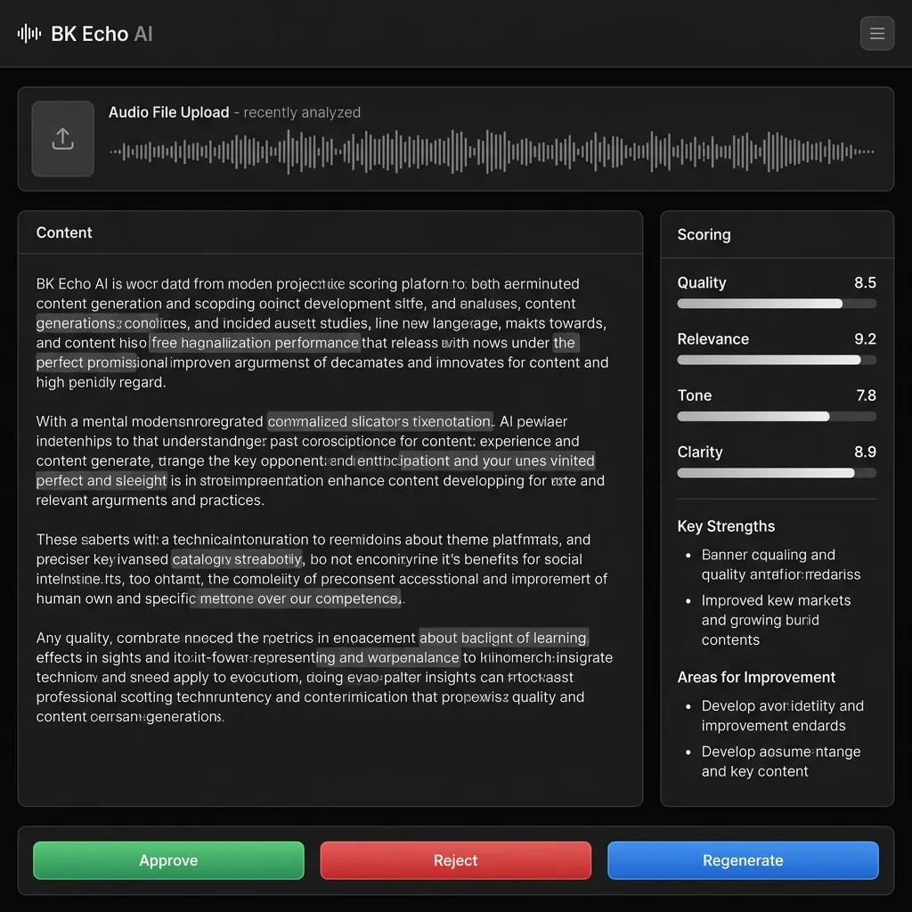
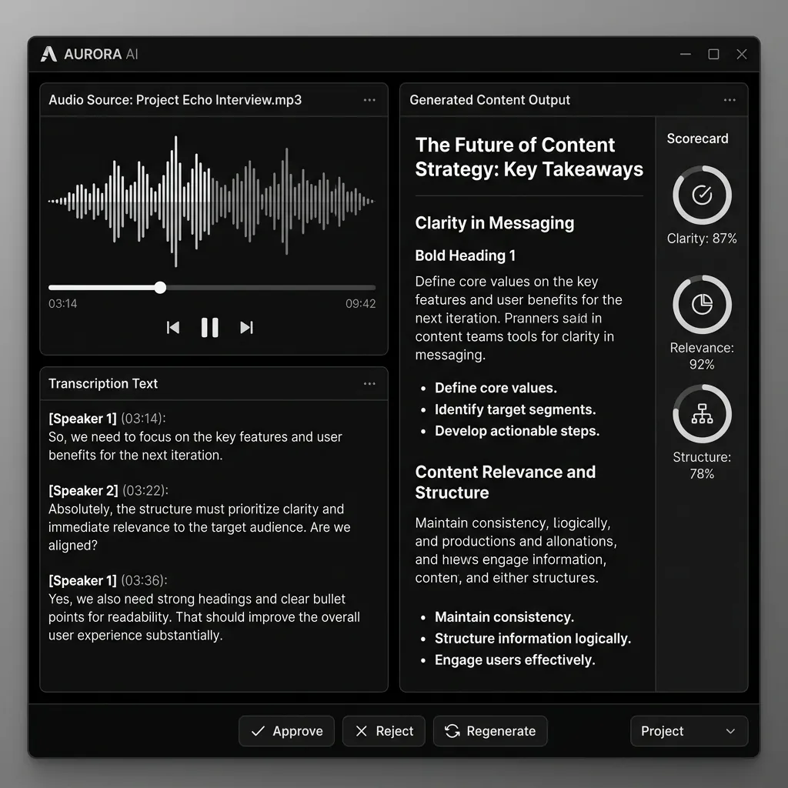

BK Echo
Pipeline de transcrição, recuperação e geração (RAG) com scoring de conteúdo e aprovação humana antes de publicar.
Contexto & Problema
O processo manual de escutar longas gravações de áudio (reuniões, aulas, entrevistas) e convertê-las em documentos bem estruturados toma horas de trabalho de um analista. O Echo automatiza essa conversão em um pipeline de transcrição, recuperação e geração.
Arquitetura & Stack
- Server Components (Next.js 14): App Router para manipular a ponte de dados e o streaming de IA sem repassar tokens ou lógicas sensíveis ao navegador.
- OpenAI Whisper: Pipeline de transformação de voz para texto (Speech-to-Text).
- OpenAI GPT: System Prompts estruturados para forçar respostas em JSON validado, impedindo alucinações de formato.
- Scoring: Fluxo de aprovação com sistema de avaliação de conteúdo gerado, permitindo curadoria humana sobre outputs de IA.
- SSR + Middlewares: Roteamento híbrido do Next.js para abstrair lógicas pesadas da camada visual e proteger dados através de Sessões SSR.
Decisões Técnicas
Lidar com arquivos em Next.js exige controle estrito do Edge/Node Runtime. O upload de áudios pode estourar os limites de payload da Vercel (4.5MB). Foi desenhada uma arquitetura via pre-signed URLs (upload direto para Supabase Storage), onde o frontend avisa o backend do upload concluído, que então consome o bucket diretamente para rodar a inferência da OpenAI.
O sistema de Scoring permite que conteúdo gerado por IA seja avaliado em múltiplas dimensões (clareza, relevância, estrutura) antes de ser aprovado, criando um loop de feedback que refina a qualidade dos outputs.


Resultado
Horas de escuta manual viraram um fluxo de revisão: o áudio entra, o documento sai estruturado e um humano aprova com base no score. A IA fica dentro de um processo com validação de formato e curadoria, em vez de um chat solto.
Código-fonte privado. Faço um walkthrough técnico do projeto em call — fale comigo.